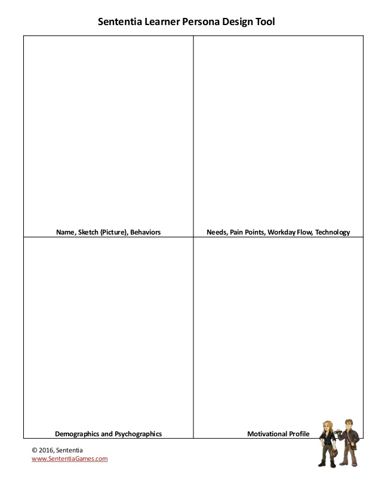
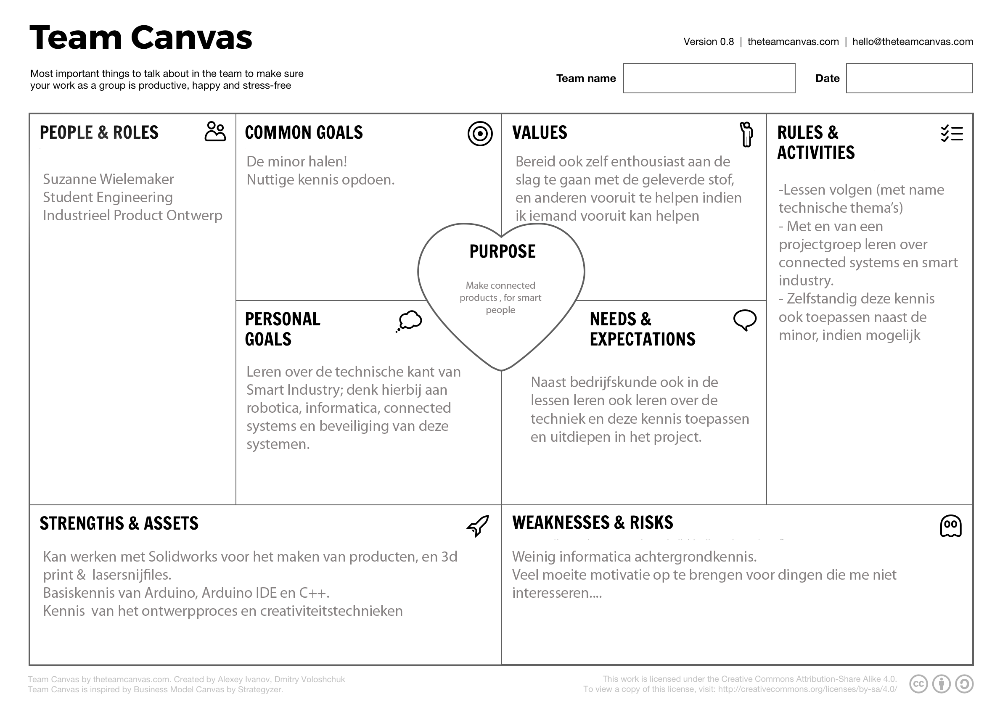
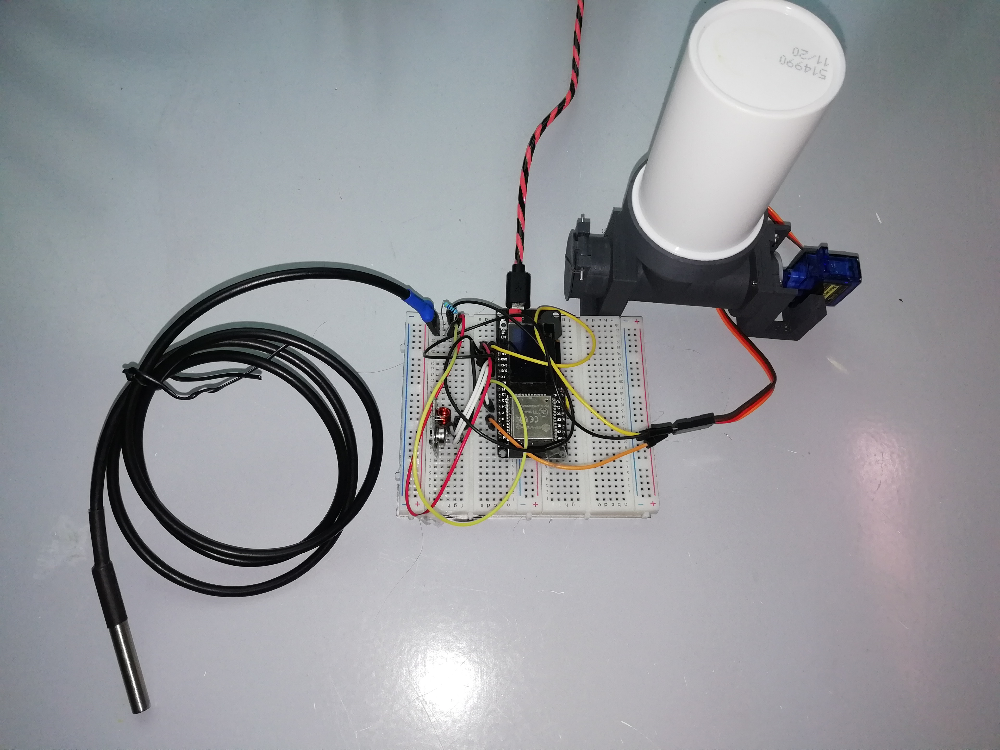
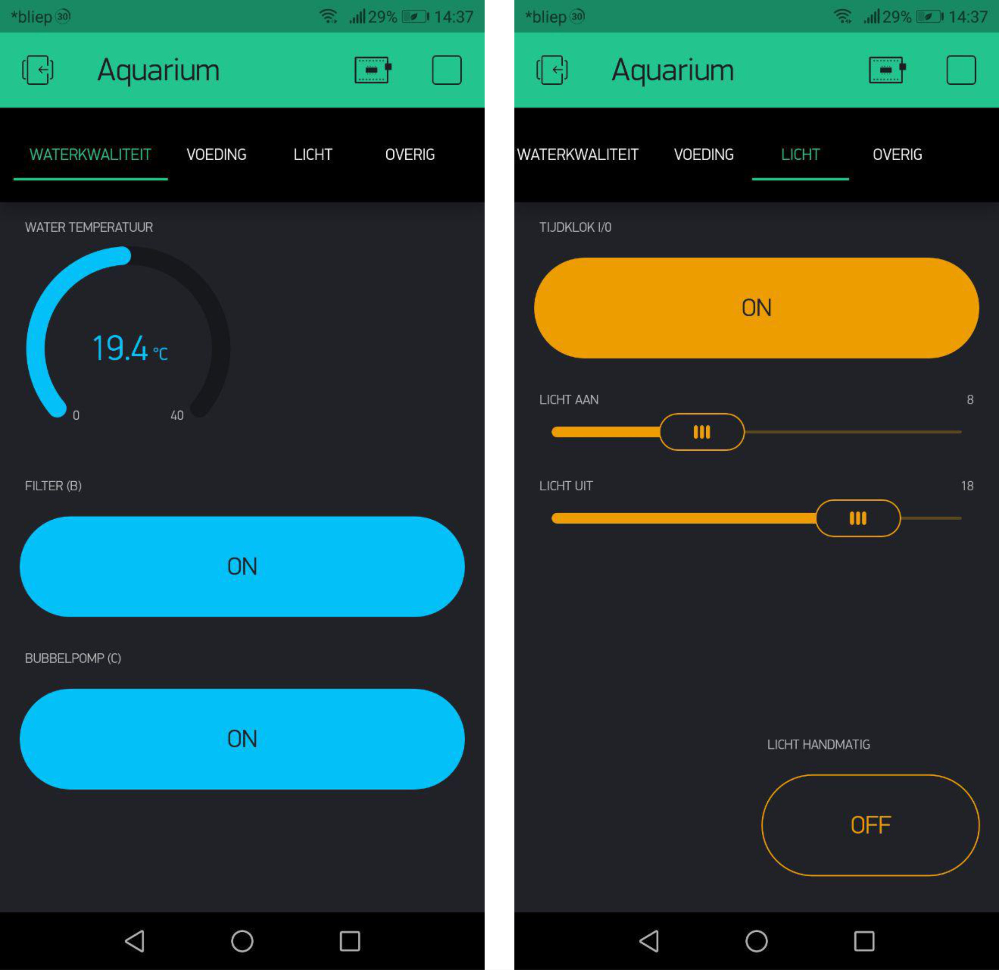
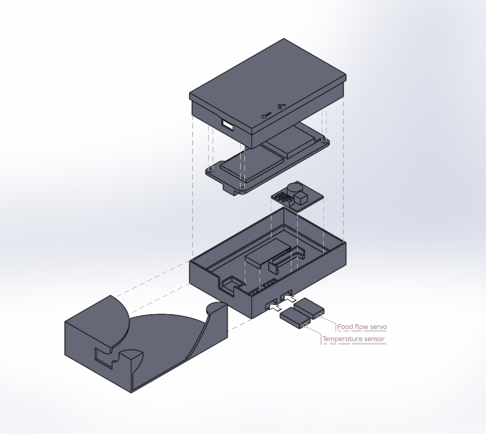
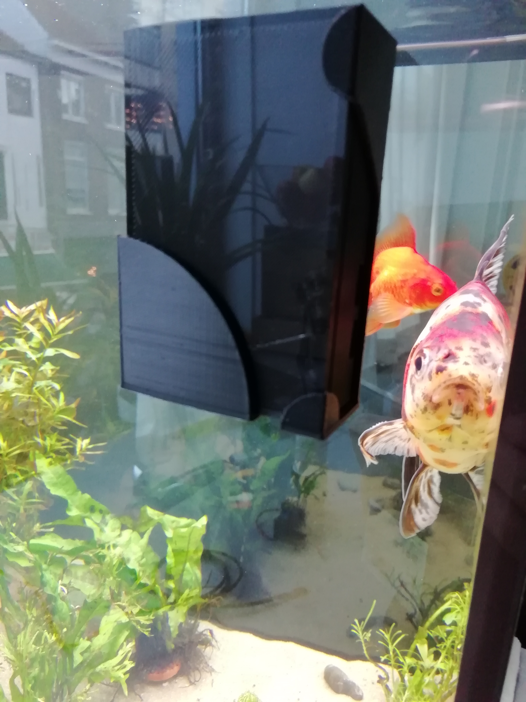

Hello World
Dit is mijn website voor de minor Smart Industry. Hier is informatie te vinden over mijn achtergrond en skills.
Tevens er is ruimte voor mijn portfolio.
Introductie
● Student Industrieel Product ontwerpen
● Interesse in Internet of things
Vaardigheden
- Creativiteitstechnieken
- Ervaring met het ontwerpproces
- Lasersnijden & 3d printen
- Programmeren met Arduino
Software
- SolidWorks
- Cura
- Adobe Photoshop
Model Sheets
 
Er zijn nog geen definitieve teams gevormd, daarom heb ik besloten de teammodellen leeg te laten.
Deze worden aangevuld zodra de teams definitief zijn.
Deze worden aangevuld zodra de teams definitief zijn.
Portfolio
• Smart Start
Na het volgen van deze minor heb ik een beter idee van wat de term 'Smart Industry' inhoud. Hoewel de details varieren, komen eigelijk alle verklaringen wel neer op een aantal punten: de soort industrie die door gebruik van moderne technieken, bijv. big data, artificial intellegence & deep learning, robotica en rapid prototyping. Dit geeft ook ruimte voor gepersonaliseerde producten en diensten.
Dit is de conclusie die heb getrokken naar aanleiding van de smart start-lessen, de ervaringen bij het projectbedrijf en de ervaringen tijdens verschillende excursies. Deze heb ik geprobeerd allemaal bij te wonen, en dat is gelukt. Van een aantal van deze excursies heb ik ook tevens een kort verslag geschreven, en bij bedrijfbezoeken heb ik aan het einde van de minor een geschatte 'smart score' geprobeerd toe te kennen aan de hand van verschillende smart scan-criteria.
Verslag WOTS
Onlangs ben ik op doorreis in Utrecht gestopt bij de jaarbeurs, waar op dat moment de WOTS beurs plaatsvond. Na bij de ingang mijn toegangskaartje te hebben afgehaald, kon een 5 hallen grote wereld van technologie en wetenschap binnenstappen. De eerste hal, thema world of (process) automation, had vooral veel standhouders met sensoren. Veel verschillende sensoren en – regelsystemen. Mijn speciale aandacht ging uit naar de stand van Fontys, die een co-op robotarm had staan en een mooie 3d printer in actie. Vooral fascinerend waren 2 3d-gesinterde metalen onderdelen die daar ook lagen.
De tweede hal, world of laboratory, heb ik overgeslagen In plaats daarvan ben ik doorgegaan naar hal 3. Deze hal had als thema world of industrial processing. Deze had met name pompen, vernevelaars, roersystemen etc... Vergelijkbaar, hal 4 (world of motion & drives) had met name robotarmen, oppaksystemen, speciale rolbanden etc.
De laatste hal, world of electronics, ben ik vrij snel doorheen gelopen. Hoewel het interessant is wat er allemaal is, ontbreekt het mij nog aan voldoende kennis om te weten wat de verschillen zijn tussen verschillende control boards en diens productietechnieken.
Het was een interessante ervaring, maar ik heb het gevoel niet heel veel nieuws te hebben geleerd. Wel nuttig was dat ik hier dingen die ik in de minor over heb gehoord, zoals de co-op robot, hier in actie kon zien.
Verslag ATAG
Het was niet verplicht en de showroom had ik al gezien, maar het leek me ook leuk om eens achter de schermen te kijken bij zo'n groot bedrijf. De dag begon met koffie, thee en een presentatie over het bedrijf en hoe zij internet en data gebruiken. Vervolgens werd de groep opgesplitst in groepen die om en om verschillende delen van het bedrijf gingen bekijken.
Mijn groep begon in het magazijn, in de logistiek. Nu is logistiek niet mijn sterkste punt, maar toch was het interessant om te zien hoe ze bepaalde problemen hebben opgelost, soms smart en soms gewoon slim plaatsen van de voorraden. Van daaruit zijn we door gelopen naar de showroom met het assortiment voor dit jaar.
Vervolgens zijn we doorgelopen naar het volgende gebouw, met een pitstop halverwege voor op zonne energie bereide kip teriyaki van een mobiel eetstandje (was erg lekker, trouwens) Eenmaal in het gebouw zijn we doorgelopen naar het onderdelenmagazijn en de assembly line, waar we uitleg kregen over de gas- elektrisch- en kit assembly lines en waarom dit aparte lijnen zijn. En van welke producten wel of niet de productie uitbesteed werd.
Tenslotte hebben we nog een bezoek gebracht aan de R&D en ontwikkelingstak van het bedrijf. Beginnende in een werkplaats, compleet met lasersnijmachine, 3d printer en verschillende verspanende machines, vervolgens het R&D kantoor, het gaslab en het testlab voor de producten.
(Notitie na de minor) Hoe interessant ATAG als bedrijf dan ook is, krijg ik wel het gevoel dat het nog een betrekkelijk traditioneel bedrijf is en nog niet zozeer heel erg 'smart'. Ze gebruiken wel al big data voor bijvoorbeeld gerichte reclame, zeer smart. Maar de 3d printer word enkel gebruikt voor prototyping (ok, ik geef toe, tis moeilijk, al dan niet onmogelijk om volledig 3d geprinte fornuizen te ontwikkelen met de FFF/FDM techniek..) er is nog niet heel veel sprake van flexible manufacturing en er wordt nog maar net gestart met apps, Internet of Things en slimme sensoren. Op een schaal van 1 (smart? Kan je dat eten?) tot 10 (smart wizzard) geef ik na mijn ervaringen dit bedrijf ongeveer een 6,5 a 7. Ze zijn op de goede weg, maar er kan nog veel meer smart.
Verslag Bit+Technova
Woensdag 17 okt. was een excursiedag naar Ede.
We begonnen bij het databedrijf Bit. Eerst met koffie, thee en een presentatie over het bedrijf en netwerkbasics. Daarna hebben we een rondleiding gekregen door de (hevig beveiligde) serverruimtes. Vooral indrukwekkend om te zien hoe alles dubbel beveiligd was tegen falen van de servers, van de dubbele stroomaansluiting, dubbel uitgevoerde koelmotoren tot de CPU's die kleine storingen opvangen en 3 enorme aggregaten die grote storingen opvangen. Ook de uitleg over hun fire control was zeer interessant; hoe ze de brand onder controle houden door de ruimtes vol te pompen met een onontbrandbaar gas om zuurstof te verminderen. (notitie na de minor) Ik vind dit een moeilijk bedrijf om een smart-score te geven. Er is zeer goed nagedacht over ongeveer alles wat er mogelijk fout zou kunnen gaan, en de beveiligingssystemen zou je ook kunnen zien als een vorm van autonome robots die problemen waarnemen en kunnen reageren voor de mens dat kan. Ze werken met computers en big data, maar ze zijn de service die big data mogelijk maakt, de oppassers voor servers van bedrijven. Ze gebruiken geen cloud, ze zijn zelf een deel cloud! Dus ik zou zeggen 7 – 8 op de schaal van 1 (smart? Ik heb liever skittles) tot 10 (Smartie)
Na dit bezoek zijn we doorgegaan naar het Technova college, waar iemand van qing een uitleg gaf over het virtualiseren en testen van processen aan de hand van virtuele modellen. Voor mijn gevoel was dit nog te oppervlakkig; ik zou graag wat meer in depth willen weten hoe je zo'n model maakt. Welke software, waar rekening mee houdend, etc etc. Na deze presentatie gingen we zelf met de projecten aan de slag met een groepje studenten. Aangezien we zelf nog maar net de PvA's hebben geschreven, ben ik met mijn groepje studenten maar begonnen met een beginnende brainstorm over verschillende technologische snufjes en opstellingen die interessant zouden kunnen zijn voor toepassing in het concept lab. Gelukkig hadden ik een gemotiveerd groepje; hier zijn erg leuke ideeen uitgekomen! Deze zorgvuldig opgeschreven ideeen zullen in het project terugkomen als inspiratiebron.
• Onderzoek
In het onderzoeksdeel was ik verantwoordelijk voor een deel van desktop research en voor een deel field research op scholen.
Het desktop research deel ging me gemakkelijk af en ben ik tevreden met het resultaat. Bij de field research stuitte ik echter op problemen; scholen reageerden niet op mijn oproep tot onderzoek of reageerden afwijzend. Ook was er vanuit het team kritiek op hoe ik het overige deel van het onderzoek had beschreven; het was te sumier geformuleerd.
Bij nader inzien had ik een andere aanpak moeten nemen en niet willekeurige scholen moeten mailen, maar meer initiatief moeten tonen en gebruik moeten maken van de contacten van het bedrijf om binnen te komen. Tegen de tijd dat ik me dit realiseerde was het echter al bijna tijd om aan het prototype te beginnen. En daar heb ik ook zeker mijn tijd voor nodig gehad, dus ik had gewoon eerder tot de bovenstaande conclusie moeten komen. De formulering in het verslag heb ik aangepast. Vanuit mijn opleiding is een niet al te lange beschrijving van je onderzoek vaak al voldoende; het gaat erom dat jij als designer kan onderbouwen waarom je die keuze hebt gemaakt. Vaak hebben opdrachtgevers niet eens de tijd om alles door te lezen, dus een goede onderzoeksvraag en conclusie zijn belangrijker dan alle resultaten uitwerken. Voor een bedrijfskundig onderzoek, zeker aangezien het in opdracht voor een bedrijf is, kan ik me voorstellen dat uitgebreide beschrijvingen belangrijk zijn.
• NFC Authenticator
Opdracht:
Maak een systeem wat middels een database rechten kan koppelen aan NFC modules met een uniek id en per NFC bepalen welke acties deze of niet mag uitvoeren.
Bij het maken van dit prototype heb ik geleerd:
- Veel zelfstandig onderzoek doen, veelal gebruikmakend van documentatie op het internet. Hoewel er veel technische kennis in huis bij het bedrijf, was er bijvoorbeeld niemand ervaring met NFC modules
- Het installeren van een operating system en benodigde software op een Raspberry Pi minicomputer
- Werken met Node-Red en SQLite
- Functies schrijven voor Node-Red, in Javascript
- Extra ervaring opgedaan met simpele SQL queries schrijven voor de communicatie met de database
- Het opzetten van een MQTT communicatie tussen twee ESP32 boards en een Raspberry Pi
- Te werken met een i2c-verbinding, om NFC chips af te kunnen lezen met een PN532 NFC reader module




• Aquariumcontroller
Probleem: een aquarium kost dagelijks een paar minuten werk om het levend en draaiende te houden. Dit maakt een weekje of zelfs een weekendje weg snel lastig.Oplossing: veel van deze dagelijkse bezigheden zijn 'domme' bezigheden die makkelijk overgenomen kunnen worden door een IoT systeem. Door de stof die ik geleerd heb in de lessen over de 'smart plant' toe te passen heb ik een compact systeem gemaakt wat de volgende functies kan overnemen als er niemand thuis is:
- Het op bepaalde tijden aan- en uitzetten van het licht, of handmatig via de blynk app;
- Het automatisch voeren. Dosis en voermomenten instelbaar via de app;
- Via de app het filter en de luchtpomp handmatig aan/uit zetten;
- Water temperatuur weergeven in de app (geen verwarming aanwezig)
- Chiptemperatuur van de microcontroller weergeven;
- Zelfstandig herstellen na een stroomstoring, o.a. door de huidige tijd op te vragen van een externe server.
In de lessen heb ik: de esp32 boards leren kennen, geleerd hoe ik deze met blynk aan het internet koppelen om zo informatie te verkrijgen uit een temperatuur- en luchtvochtigheidssensor. Geleerd hoe ik een RF transmitter kon gebruiken om een KlikAanKlikUit schakelaar te besturen die een lamp aan en uit te zetten, en hoe een pompje aangesloten moet worden aan dit systeem. Omdat de esp32, temperatuursensor en KlikAanKlikUit systemen allemaal libraries nodig hebben om te functioneren, heb ik ook geleerd hoe je deze importeert in Arduino IDE. En tenslotte, hoe ik in Solidworks een behuizing ontwerp. Ondanks dat ik met Solidworks producten kon modellen, wist ik niet hoe het zat met toleranties in 3d geprinte behuizingen.
Daarnaast heb ik zelf veel onderzoek gedaan naar functies en sensoren die
verder nog nodig waren:
- Onderzoek naar hoe 1 RF transmitter met de gegeven library 3 switches kan besturen
- Het aflezen van een DS18B20 waterproof dallas onewire temperatuursensor
- Het opvragen van de huidige tijd van de NTP serverpool
- Het schrijven van data in het EEPROM geheugen
- Opvragen van de temperatuur van de interne temperatuursensor van de esp32
- Het besturen van een continuous rotation servo.
Ik vind zelf dat ik op het gebied van kennis van het besturen van microcontrollers een stuk vooruit ben gegaan. Met name in het lezen en begrijpen van de functie van bepaalde stukken code merk ik vooruitgang, maar ook in het begrijpen van het verschil tussen een Arduino en een esp32 board.
Ik heb wel de ambitie om ook na de minor verder te blijven werken aan dit project. Zo zou ik bijvoorbeeld graag:
- bugs verwijderen uit de code. Hoewel ze geen van allen groot effect hebben op het functioneren, zitten er helaas nog wel een paar in...
- meer informatie over de waterkwaliteit willen. PH sensor, hardheid sensor etc toevoegen.
- een sensor toevoegen die mij vertelt wanneer de voorraad van het voerssysteem leeg is en moet worden bijgevuld.
- Voorzover mogelijk, automatische waterwissels mogelijk maken.